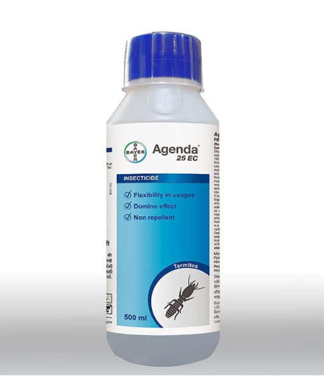

Pasura Exodus organic(500ml)
₹1650 MRP: ₹1999
- Suitable crops:
- flowers, Bananas
Naval Takat-Bio fertilizer
₹410 MRP: ₹440
- Suitable crops:
- flowers,seaweeds
Syngenta Fungicide 75% WP
₹125 MRP: ₹249
- Suitable crops:
- Wheat,Paddy,Maize
INDOFIL M-45 Fungicide
₹325 MRP: ₹599
- Suitable crops:
- Paddy,Potato,Tomato

Bayer Agenta Termite control
₹880 MRP: ₹960
- Suitable crops:
- Mango,Banana,Papaya
Curzate 100 GM Corteva
₹224 MRP: ₹328
- Suitable crops:
- Grapes
Bayer Antracol Fungicide
₹460 MRP: ₹600
- Suitable crops:
- chilli
Syngenta kavach Fungicide
₹195 MRP: ₹219
- Suitable crops:
- Tomato
ADAMA Acemain
₹320 MRP: ₹500
- Used for:
- controls red spider mite of brinjal,apple
UPL Macarena
₹800 MRP: ₹1047
- Suitable crops:
- Soybean